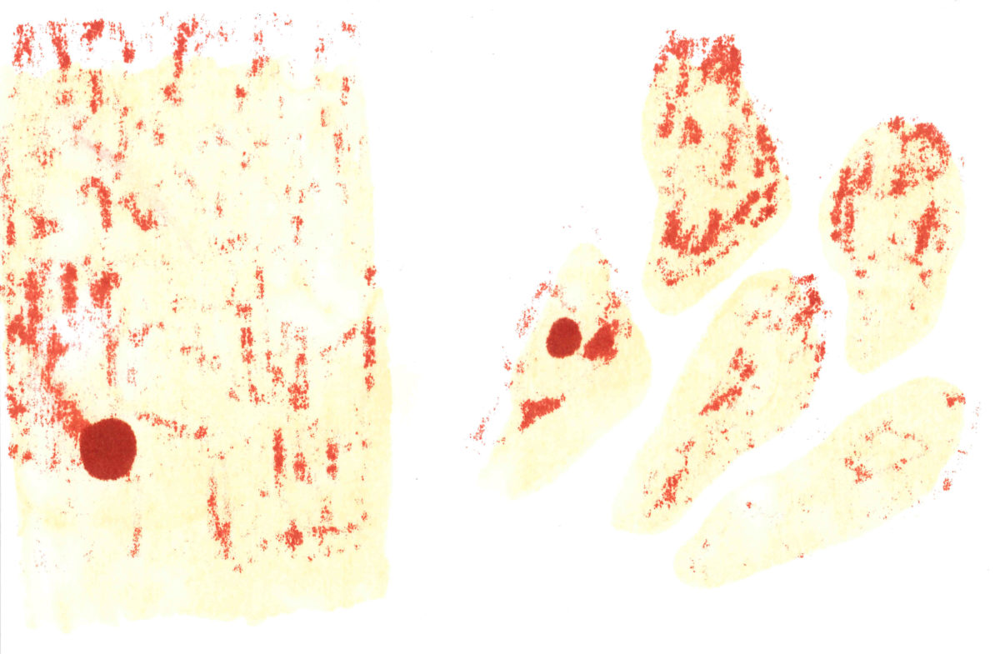

Sostenibilità e Comunicazione Scientifica
comunicazione, energia, festivaletteratura, intervista

Una conversazione con Nicola Armaroli
[Pubblichiamo una trascrizione, parzialmente riedita, di un’intervista a Nicola Armaroli avvenuta Giovedì 9 Settembre 2021 a Mantova nell’occasione di Scienceground 8/5 a Festivaletteratura]
Qualche anno fa uscì la notizia che a Berlino sarebbe stato inaugurato un treno a idrogeno “a impatto zero”, in palese violazione della seconda legge della termodinamica. In primo luogo vorremmo chiederle qualche considerazione realistica sullo stato della ricerca sull’idrogeno come vettore di energia e come carburante.
Non esiste energia a impatto zero; questa è un’ovvietà che però viene spesso dimenticata dai media. L’idrogeno ha necessariamente un impatto, nel senso che non esistendo sul nostro pianeta quantità significative di idrogeno molecolare dobbiamo produrlo. L’impatto della produzione di idrogeno oggi è elevatissimo, perché lo produciamo da steam reforming, quindi principalmente da metano, emettendo tantissima CO2. Una percentuale non trascurabile di tutta la CO2 che emettiamo, qualche punto percentuale, è legata alla produzione di idrogeno utilizzato nell’industria chimica e petrolchimica.
Bisogna trovare altre strade. Io non so a cosa si riferisse il treno a idrogeno di cui mi dice, ma l’impatto zero non esiste: anche se facessimo l’idrogeno nella maniera più pulita possibile, cioè l’idrogeno verde, dovremmo utilizzare degli elettrolizzatori per scindere la molecola dell’acqua in idrogeno e ossigeno, e dovremmo poi utilizzare delle celle a combustibile. Queste faranno funzionare il treno e lo renderanno elettrico in modo “non convenzionale”, cioè non attaccato a un pantografo, ma a una macchina che produce elettricità a partire dall’idrogeno. Elettrolizzatori e celle a combustibile richiedono ad esempio catalizzatori, che contengono metalli rari la cui estrazione comporta un impatto ambientale. È evidente che l’idrogeno verde è la soluzione migliore in assoluto, ma l’idrogeno a impatto zero non esiste, come non esiste nessuna forma o vettore di energia a impatto zero.
Per legarci allo stesso argomento del “falso impatto zero”, parliamo di greenwashing, una pratica attuata da aziende di tutte le dimensioni, che si focalizzano su un beneficio locale. Per esempio nel dire “a Berlino ci sono tram a idrogeno, quindi l’aria di Berlino è più pulita”, spesso si trascura che quell’idrogeno va prodotto, magari inquinando da un’altra parte. Vorremmo chiederle quali sono i tentativi migliori di progetti in corso che abbracciano la complessità del problema dell’energia evitando, appunto, il greenwashing.
L’attività di greenwashing è molto sviluppata da parte di varie aziende, che cercano con operazioni di facciata, di piccolo cabotaggio, di ripulirsi l’immagine da danni ambientali molto grandi che causano tipicamente, ma non solo, nelle zone più povere di questo pianeta. Questa certamente è un’operazione che al giorno d’oggi è più difficile fare, perché è più facile in qualche modo smascherarli. A mio parere, l’era del greenwashing volge inevitabilmente al termine, perché in questo campo le menzogne oggi hanno le gambe particolarmente corte. Dobbiamo studiare qualsiasi processo di produzione energetica e di uso dell’energia in tutta la sua complessità, cioè lungo il ciclo di vita.
Per fare un esempio pratico, ci sono molti studi che paragonano l’impatto sul ciclo di vita dell’auto termica rispetto all’auto elettrica: nonostante l’auto elettrica, come qualsiasi dispositivo tecnologico, è ben lungi dall’essere a impatto zero, il suo impatto è comunque nettamente più basso di quello di un’auto termica. Bisogna considerare infatti tutta la fase estrattiva del petrolio, l’utilizzo e l’emissione di CO2 in atmosfera, i danni alla salute etc. Naturalmente l’estrazione avviene anche per i materiali che compongono una batteria, però in quel caso il ciclo può essere chiuso, e questo fa una bella differenza rispetto alla CO2. Io faccio sempre questo esempio molto netto: un’automobile a combustibili fossili, quando ha finito il suo utilizzo, ha consumato circa sei/sette volte il suo peso in carburante, benzina o gasolio, e ha emesso più di venti volte il suo peso in termini di CO2. Tutto questo è tipicamente ignorato, perché la CO2 non si vede, non si tocca e non ha odore, quindi le persone non ci pensano. Poi tocca sentire le critiche alle auto elettriche perché “la batteria inquina”. La batteria di un’auto elettrica uno la porta sempre con sé, io non l’ho mai trovata in giro per il garage. È un dispositivo sofisticato, per farlo occorre chiaramente energia, ma è un dispositivo chiuso; quando quella batteria finirà il suo ciclo di vita, avrà una seconda vita, magari come dispositivo di accumulo per energie rinnovabili, e poi verrà avviata al riciclo, che è tecnicamente possibile. Pure questo ha un impatto, ma tenendo conto dell’impatto complessivo del ciclo dell’auto elettrica non c’è paragone rispetto alla termica. Bisogna cominciare a usare questo tipo di approccio, perché non basta più dire “questo non inquina” facendo vedere solo un aspetto di quella che è la sua vita: bisogna considerare una tecnologia dalla culla, alla tomba, e di nuovo alla culla.
Lei ha parlato di “ciclo” di utilizzo e di “riciclo”. Ogni anno, la nostra comunità centra le sue attività intorno a una parola chiave, e quest’anno la parola è “scarti”. In un ecosistema ideale non esistono scarti, cioè non vengono prodotti materiali o sostanze che vengono utilizzati una volta e poi buttati: tutto viene rielaborato, fisicamente o chimicamente. Questo è il contrario di ciò che fanno gli esseri umani: noi produciamo cemento, plastica, scorie nucleari, CO2… Questo ovviamente non è sostenibile, perciò cerchiamo di chiudere i cicli con la tecnologia e di implementare sistemi di economia circolare. Ci interessa la sua opinione su questi ultimi: a che punto è la ricerca in questi campi? Pensa che sarà possibile, nel futuro a breve termine o più in là, economie circolari che non siano esclusivamente rurali?
Il fatto che l’economia debba uscire dal modello lineare penso sia ormai un’acquisizione culturale abbastanza consolidata. La domanda è: riusciremo a fare un’economia circolare in cui gli scarti possono essere integralmente utilizzati per le attività economiche? La risposta in senso assoluto è no, purtroppo il secondo principio della termodinamica lotta contro di noi, e qualsiasi tipo di attività umana non potrà mai avere un’assenza totale di scarti.
Quello che sicuramente però possiamo fare è migliorare in maniera consistente quello che produciamo adesso. Il segreto del successo di un’economia circolare — o comunque di un’economia efficiente, per la quale il rifiuto non è più qualcosa che non ci riguarda, ma qualcosa che rientra nell’economia — è progettare gli oggetti in modo tale che siano disassemblabili. Per esempio, nel campo della ricerca scientifica, si sta lavorando molto sulle batterie al litio, che sono utilizzate ovunque: non solo nelle automobili, ma anche nei dispositivi elettronici (anche in quello che sta registrando la mia voce) e sono stati tutti pensati, per lungo tempo, soltanto per essere dispositivi efficienti e funzionanti. Questa è un po’ la mentalità che abbiamo quando entriamo nel supermercato nei giorni antecedenti al Natale: lo troviamo pieno di cose, potenziali regali, di beni di consumo, ma nessuno pensa che nel giro di ore, giorni, mesi, anni, tutta quella bella roba sfavillante diventerà un rifiuto. Noi abbiamo vissuto con questa mentalità, che va superata.
Tornando alle batterie di cui parlavo, il segreto è evitare che tutti i componenti siano letteralmente incollati fra di loro, in maniera quasi irreversibile, e fare in modo che siano più facilmente disassemblabili. Questo è una frontiera importante della ricerca tecnologica, su questo si sta lavorando, e sono abbastanza fiducioso che entro una decina d’anni i dispositivi tecnologici saranno molto migliori di adesso — anche perché altrimenti tutto questo si rivolterà contro di noi, e sarebbe masochistico continuare in un modello lineare per cui una volta che un rifiuto è tale, tale rimane e chissenefrega. Questo chiaramente non ha nessun senso.
Un’altra domanda sugli scarti e sull’impatto zero: ascoltando alcune sue interviste, ci è sembrato di capire che lei stia facendo costruire una casa ecosostenibile e a impatto zero; le va di parlarci delle tecnologie che ha implementato? E quanto di queste tecnologie è applicabile su larga scala? Non deve essere troppo difficile costruire una casa a impatto zero su un terreno vuoto, magari isolato, ma il 70% degli esseri umani vive nelle città, e questa è una difficoltà in più… Esisteranno mai dei palazzi green, dei grattacieli a impatto zero?
Gli edifici sono un punto chiave per rendere sostenibile la nostra società: noi viviamo in case che sono fondamentalmente dei colabrodi, perché siamo figli di una mentalità per la quale bastava tirare su quattro muri, posare qualche tubo, qualche filo, e in qualche modo l’elettricità e il gas sarebbero arrivati. Questa mentalità purtroppo è stata nefasta, e ha portato alla costruzione — soprattutto negli anni del boom economico — di edifici che adesso necessitano di profonde ristrutturazioni, perché non possono più avere questa insostenibilità energetica, con un costo altissimo di gestione per chi ci abita, tra l’altro.
Io sto ristrutturando un vecchio edificio per renderlo sostenibile dal punto di vista energetico, ed è fatto in questo modo: sul tetto sono collocati pannelli fotovoltaici per una potenza di circa 11 kW, collegati ad una batteria da 24 kWh che accumula durante il giorno, in modo tale da avere una riserva di elettricità anche per le ore serali. Questo sistema alimenta una pompa di calore geotermica, cioè che scambia calore con il sottosuolo, che si trova alla temperatura costante di circa 17 gradi a 100 metri di profondità. Questo mi dà la possibilità sia di riscaldarmi in inverno che di raffrescarmi d’estate. Il tutto con l’energia elettrica prodotta dall’impianto fotovoltaico sul tetto. La casa è dotata anche dei pannelli solari termici per produrre l’acqua calda sanitaria.
La caratteristica chiave di case come queste è di staccarsi dal gas. È chiaro che questo è possibile farlo facilmente nel nuovo o con un abbattimento con ricostruzione come nel mio caso. È evidente che con edifici vecchi o antichi questo è estremamente più complicato. Io non sono un architetto, non sono un ingegnere, ho una figlia che studia architettura, e quello che mi sforzo di farle capire è che ci sarà un sacco di lavoro da fare per riprogettare le nostre case e le nostre città. Non ho quindi le competenze specifiche per poter prevedere come si potrà adeguare energeticamente una casa in un centro storico. Quello però che sappiamo con certezza è che dovremo smettere di bruciare combustibili fossili, quindi il riscaldamento in futuro non potrà essere basato sul metano, per una serie di ragioni legate anche al suo impatto climatico. Il metano infatti viene in parte rilasciato in atmosfera lungo tutta la filiera di trasporto e distribuzione. E questo è un enorme problema, troppo a lungo trascurato.
Ci sono quindi le città da reinventare, e su questo credo che il mondo degli architetti e degli ingegneri abbia tanto su cui lavorare dal punto di vista delle soluzioni tecnologiche. La mia casa è anche costruita con un materiale che si chiama legno-cemento, che utilizza legno di scarto mescolato a cemento; questo dà un notevole isolamento termico e al tempo stesso permette di raggiungere l’antisismicità che è necessaria secondo le regolamentazioni attuali, in buona parte del territorio italiano. Quindi, sicuramente questa casa non è a impatto zero come materiali costruttivi, ma è meno impattante di quanto poteva esserlo una casa costruita trenta, per non parlare di cinquanta anni fa.
Quest’anno abbiamo organizzato una serie di lezioni sulla geoingegneria, questa disciplina che, da speculativa e quasi fantascienza che era qualche decennio fa, comincia a diventare praticabile, a proporre idee che sembrano realizzabili nel medio termine: penso per esempio all’idea di cui si è parlato, qualche tempo fa, di immettere degli aerosol nell’atmosfera per aumentare la riflessitivà della Terra e combattere il riscaldamento climatico. Cosa pensa di queste soluzioni? Pensa che vedremo idee della geoingegneria realizzate presto? E quali sarebbero le implicazioni geopolitiche e i rischi che operazioni di tale scala comporterebbero?
La geoingegneria è appunto una disciplina che studia ad esempio come ridurre l’irragiamento solare che raggiunge la superficie terrestre per raffreddare in maniera artificiale la Terra. Un’altra opzione geoingegneristica è quella di aumentare la fotosintesi naturale andando per esempio a fertilizzare gli oceani, in modo che il plankton marino sia in grado di assorbire più CO2. Sono tutti interventi che dovrebbero essere realizzati su vasta scala, quindi hanno sicuramente vari svantaggi: il primo evidentemente è quello dei costi. C’è inoltre la necessità che questi interventi siano mantenuti nel tempo: non posso attuare un progetto di geoingegneria che aiuti il pianeta a raffreddarsi per dieci, vent’anni, poi non ho più le risorse e smetto di punto in bianco. Tornerei al punto di partenza, facendo possibilmente più danni. Sono progetti da pensare su un lunghissimo arco di tempo, ma noi tipicamente non siamo portati a pensare in questo modo.
Un altro rischio è quello etico. Infatti si potrebbero addirittura mutare i profili del tempo atmosferico e paesi più ricchi potrebbero utilizzare questo tipo di “arma” contro paesi meno tecnologicamente avanzati e più poveri. È anche vero che se le conseguenze del riscaldamento globale sono così serie da non riuscire a trovare una soluzione in tempi brevi, come extrema ratio — ammesso e non concesso che siano tecnicamente fattibili (questo è tutto da dimostrare) — si potrebbero considerare delle scelte geoingegneristiche. Questi progetti avrebbero il vantaggio di entrare in funzione in tempi brevi: si propone per esempio di sparare dell’aerosol nell’atmosfera per ridurre la radiazione solare che arriva sulla Terra, e lo si potrebbe fare in tempi più brevi della scala plurisecolare che è richiesta al pianeta per “digerire” la CO2 che stiamo immettendo in atmosfera. Questo però vorrebbe dire essere messi davvero molto male, spero che non ci dovremo mai arrivare…
Parliamo adesso di comunicazione della scienza. Una delle idee alla base della nostra comunità eXtemporanea è la seguente: pensiamo che la narrazione della scienza “blockbuster”, la spettacolarizzazione e il cercare di farla diventare intrattenimento, hanno ovviamente il vantaggio di coinvolgere il pubblico, però tolgono spessore al dibattito scientifico, quasi nascondendolo al pubblico e dando l’immagine del ricercatore chiuso nella sua torre d’avorio, che ogni tanto lancia delle sacre scritture dalla finestra al popolo — immagine che chiaramente non potrebbe essere più lontana dalla verità. D’altro canto è impossibile raccontare tutte le sfaccettature del dibattito scientifico al pubblico non specialista, proprio perché non specialista… Dov’è il punto di equilibrio? Cosa pensa della spettacolarizzazione della scienza? Quanto è necessaria e quando diventa dannosa?
È sicuramente necessario che il clima che si è respirato molto nel passato, quello dello scienziato chiuso nella sua torre d’avorio, cambi. Non possiamo più permetterci il lusso di restare rinchiusi e raccontarcela fra di noi, perché ci sono alcuni problemi, come quelli climatici e della transizione energetica, che riguardano tutti quanti, e le motivazioni che ci spingono a intervenire hanno solide basi scientifiche. Si presenta quindi la necessità di spiegare al grande pubblico quali siano i problemi e perché occorre intervenire in un modo piuttosto che in un altro. Naturalmente io non ho la “ricetta giusta”, però credo che riuscire a fare comunicazione scientifica rigorosa, non approssimativa ma con i termini scientifici adatti per quanto riguarda numeri, dati e prospettive, sia fattibile, anche in maniera pop. È possibile spiegare alle persone il riscaldamento climatico senza ammazzarli, però bisogna riconoscere che non tutti gli scienziati sono in grado di farlo. Ultimamente, per esempio, abbiamo visto in televisione numerosi medici spiegare la pandemia, il virus e le sue conseguenze; oggettivamente, alcuni erano molto bravi, altri meno. A quel punto entra in ballo la capacità personale…
Io penso che si possa fare scienza pop rigorosa, senza cadere nella banalità, dicendo le cose come stanno. Il passaggio di temi antiscientifici nei media è terribile, tutto quello che sentiamo in questi mesi su teorie complottiste, o su persone che negano il cambiamento climatico, francamente fa cadere le braccia. Per questo invito la nostra categoria a sporcarsi un po’ di più le mani, per aiutare le persone a capire in che razza di pasticcio ci siamo cacciati.
L’importanza di parlare di scienza e di farlo bene si è rivelata nell’ultimo anno e mezzo, con la pandemia: in Italia, ma non solo, c’è stata confusione all’inizio su cosa fosse il Covid, su quali fossero i rischi e via dicendo, e come giustamente ha detto lei ci sono stati tanti che hanno parlato, persone di scienza ma non solo, e hanno spesso cercato il sensazionalismo piuttosto che la precisione e la coerenza. Cosa pensa di questo, diciamo, intoppo iniziale della comunicazione sul Covid? Secondo lei è sintomo di un problema più profondo nel modo in cui si parla di scienza?
Sarò un po’ cattivello qui: se i virologi li avessimo sentiti prima — e se qualcuno li avesse fatti parlare, chiaramente — forse non saremmo arrivati completamente impreparati alla pandemia: era arcinoto, leggendo libri e report, che una pandemia prima o poi avrebbe colpito, non era questione di se ma solo di quando. Avevo citato il problema su Sapere in un mio editoriale nel 2018, indicando quali erano i problemi che stavano per affliggere l’umanità, tra cui appunto la pandemia. Non sto dicendo di essere un profeta, perché era un’ovvietà assoluta, ma un’ovvietà che non era passata nel grande pubblico e al decisore politico. Ci siamo addirittura trovati senza un piano pandemico, ricordate? Questo forse ricade anche un po’ nella responsabilità di quegli scienziati che poi sono diventati tanto popolari in questi mesi: forse avrebbero dovuto bussare prima alla porta dei decisori politici e dell’opinione pubblica. Ma va anche detto che la politica non è disposta ad ascoltare molto la scienza. Soprattutto quando si parla di catastrofi le orecchie non sono aperte, complice anche il cortotermismo che caratterizza la politica attuale… Se fossero andati a dire “fate scorte di mascherine perché potrebbe arrivare una pandemia”, è quasi certo che nessuno li avrebbe ascoltati.
Per quanto riguarda il sensazionalismo, purtroppo è una piaga di cui la comunicazione scientifica risente. Bisogna essere chiari: leggevo oggi [9 settembre 2021, ndr] che un’azienda energetica ha fatto una scoperta clamorosa nel campo della fusione. Forse, prima di arrivare sui quotidiani queste cose dovrebbero finire nelle riviste scientifiche, quindi est modus in rebus: quando uno fa una scoperta scientifica, o un’analisi dati, la pubblica su una rivista specializzata.
Invito i cittadini a diffidare delle notizie che arrivano sui quotidiani, che fra l’altro spesso sono pure distorte: se andiamo a vedere tutte le volte che è stata trovata una cura per il cancro, o una soluzione energetica miracolosa, o una soluzione al problema dell’acqua, viene fuori una lista che non finisce più.
Ricordiamoci che la scienza è un’impresa umana difficile, complicata e soprattutto lenta; la conoscenza scientifica richiede grande lavoro, grande umiltà e grande sacrificio. I vaccini a RNA sono stati somministrati adesso, ma non sono usciti dal nulla nell’ultimo anno. È una storia che nasce decenni indietro, e non è un caso che fortunatamente siamo stati in grado di svilupparli molto velocemente: dietro c’era un lavoro enorme, di lunghissima data. Non esistono soluzioni facili a problemi complessi, non esistono grandi rivoluzioni in campo energetico dalla mattina alla sera; esiste innanzitutto il lavoro quotidiano per migliorare quello che abbiamo già. Pensiamo per esempio a quello che è accaduto sia nei processi produttivi che nelle rese dei pannelli fotovoltaici che mettiamo sui tetti delle nostre case. Il pannello al silicio che sta rivoluzionando il mondo dell’energia è stato inventato nel 1954, quindi dal momento in cui è stato inventato al momento in cui ha cominciato a cambiare la vita delle persone sono passati quasi 70 anni! Purtroppo non c’è niente di veloce in campo scientifico e tecnologico, c’è un lavoro quotidiano e complesso, e questa complessità deve essere fatta capire anche alle persone comuni, che non masticano questi concetti dalla mattina alla sera, come chi fa il nostro lavoro.
Lei dice giustamente che è dovere di chi fa scienza parlarne e farlo bene; è però vero che spesso al pubblico non interessa. Chi va a leggere una rivista scientifica lo fa perché è interessato, ma non sono le stesse persone che c’è bisogno di raggiungere…
Si, chiaramente il risultato di una scoperta scientifica letto su una rivista specializzata ha uno spessore tale che renderlo fruibile per le persone che non hanno una competenza specifica è molto difficile. Però è anche vero che i risultati e le scoperte rilevanti sono facilmente spiegabili in 1 minuto, se quella scoperta è davvero importante e se abbiamo veramente capito fino in fondo il suo significato. Questa è la sfida che tocca un po’ a noi ricercatori, riuscire a spiegare queste cose difficili in maniera semplice, e su questo insisto per l’ennesima volta: dovremmo sporcarci di più le mani.